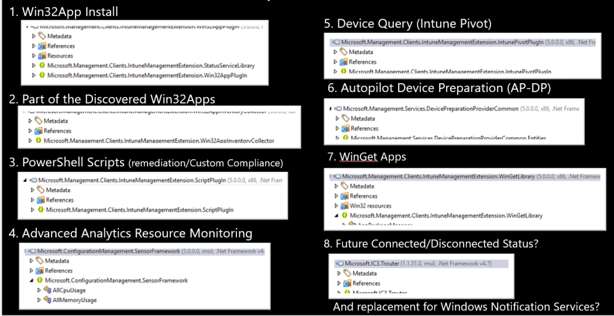
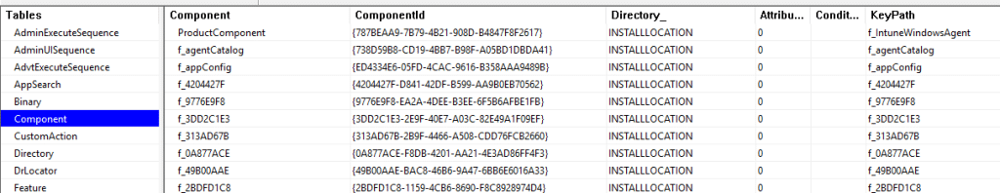
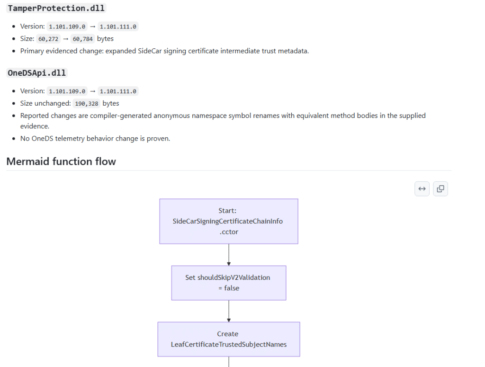

The Intune Management Extension is doing a lot more than most people give it credit for. That is why Intune Management Extension Release Notes make sense: when the local SideCar/IME agent changes, I want to know what changed before troubleshooting turns into guessing.
Introduction
The Intune Management Extension is one of those components that quietly became one of the most important components on our devices over time. Most admins first meet it when a Win32 app fails. The app is assigned, the device checks in, nothing happens, and sooner or later someone opens IntuneManagementExtension.log to find out why the install did not start or why the detection rule decided to ruin the day.
The thing that magically installs Win32 apps... That is usually how the IME is explained to people.
But that description is way too small for what the IME is actually doing today. The moment you start looking at the device side of Intune, you see the IME showing up in more and more places. Win32 apps are the obvious part, but the same agent is also involved in scripts, remediation, detection logic, reporting, device queries, Remote Help, APv2-related components, and many other functions.


That makes the IME one of the most important moving parts on an Intune-managed Windows device. It is not just sitting there waiting for an app install command. It is the agent that decides what the device needs to do, what has already happened, what still needs to be reported, and which part of the IME should carry out the task.
And when a component with that much responsibility changes, it would be nice to know what changed.
Intune Management Extension needs Release Notes
Microsoft already provides the “What’s new in Intune” page, which is useful. It gives us the product view. New settings, new features (if we don’t spoil it for them), new portal experiences, new service side behavior, and all the things Microsoft wants us to know about from an Intune product perspective.
The device side is a totally different story. The IME itself also changes. New versions appear without announcement. The MSI changes, and with it, some new features or bug fixes can be introduced. Sometimes the change is small, sometimes it is only a rebuild, and in the best case, a changed DLL hints at something that is not yet visible in the portal. Sometimes a local behavior changes, and you only notice it when something suddenly behaves differently on a device.
That missing layer is what makes troubleshooting harder than it needs to be.
The part that normally stays invisible
Official release notes usually explain changes from the product side, which makes sense. Most admins want to know which setting was added, which workload got a new option, or which feature is rolling out. That is the information you need when you manage the service.
But again… the IME is in its own separate world. The service can announce a new, wonderful feature even though the local agent already includes part of the plumbing. The IME agent can also change without a big announcement because the change is internal, preparatory, or related to reliability. Sometimes that is fine. Sometimes it becomes important when you are troubleshooting a device and trying to understand why the same flow suddenly behaves a little differently than before.
That is also why the earlier config file issue was interesting. From a distance, a config file sounds like a small detail. Once you follow it down to the device, it becomes clear how much it depends on the local agent to read the right information and process it correctly. A small change on the device side can become a real troubleshooting rabbit hole when there is no easy way to see what changed between agent versions.
That is where the standard Intune release notes are no longer enough. Not because they are bad, but because they are written for a different layer. They explain Intune as a product. They do not explain every meaningful change within the local agent responsible for carrying out much of that work. In my opinion, the IME needs its own technical change view.
Why I started looking at IME versions differently
Whenever a new IME version appears, the version number itself is not enough. It tells me something changed, but it does not tell me what changed.

The first thing I normally look for is the IntuneWindowsAgent.msi that was downloaded to the device. The EnterpriseDesktopAppManagement registry key usually provides enough information to locate the MSI, the product version, and the download URL. From there, the actual investigation starts.

I want to know whether the MSI changed in a meaningful way. Did the MSI tables change? Did the install sequence change? Were custom actions added, removed, or adjusted? Was something added to the payload? Did the main agent executable change? Did one of the plugins change?
That already gives a better picture, but the DLLs are where things usually become more interesting. A changed DLL does not automatically mean the runtime behavior has changed. A file can be rebuilt, signed again, or version bumped without any meaningful logic change. That is why the next step is looking deeper at the managed methods inside the DLLs.
That is where you sometimes find the useful stuff, and those are the details that help explain what might have changed in the actual behavior.
Intune Management Extension release notes automation
Doing this investigation manually once is fine. Doing it for every Intune Management Extension release is not. It is repetitive, and repetitive work is where you start missing things. One time, you focus on the MSI tables.


Another time, you look at the DLL versions but skip the method-level comparison. Another time, you notice that a DLL has changed, but do not follow the changed function far enough to understand the flow.
So I started automating the investigation. Not because the automation is the story, but because the missing visibility is the story.
I wanted a repeatable way to ask the same questions every time a new IME version appears. What changed in the MSI? Did the install flow change? Did custom actions change? Which payload files changed? Which managed DLLs changed? Were there method level changes? If a function changed, what does that function actually do? Is the change proven by the evidence, or is it still an interpretation that needs runtime validation?
That last question is important.
It is very easy to overstate findings when looking at internal changes. A function name can suggest intent, but that does not mean the flow is active. A new branch can exist before it is used. A changed DLL can look exciting and still be nothing more than cleanup. That is why these Intune Management Extension release notes need to be honest about what is proven and what is not.
The goal is not to turn every internal change into a dramatic story. The goal is to explain what changed, why it may matter, and what still needs to be tested. That is the kind of Intune Management Extension release note I would actually want to read.
The function flow is the real story
One thing I wanted from these Intune Management Extension release notes is a Mermaid flow, not a generic diagram that only shows one version compared to another. That looks nice, but it does not help much when you are trying to understand a changed DLL.


If an existing IME function changed, the diagram should explain how that function works. What comes in, what gets checked, which branch is taken, what action happens, which state is updated, what gets logged, and what comes out at the end.
That kind of flow makes a technical release note easier to understand. You do not need to start by staring at IL or decompiled C#. You can first look at the function flow to understand the rough behavior, then look at the evidence behind it.
That is much more useful than a generic “old version versus new version” diagram. If the changed function flow can be proven from the evidence, the release note should show it. If the evidence is not strong enough, the release note should say that too.
Publishing the Intune Management Extension Release Notes on GitHub
The next step is making the results public. The IME change notes will be published on GitHub in the IME Change Tracker repository. The idea is simple. Every time a new IME version is found, there should be a place to capture, review, and search for package differences later.

Some releases will probably be boring, and that is perfectly fine. A boring release note that says the MSI changed, but that no meaningful method-level changes were found, still has value. It saves time. It suggests there is probably no reason to spend the evening digging through DLLs.
Other releases will be more interesting, because maybe a function showed up those hints at something Microsoft is preparing. Those are the changes I want to capture.
Not as official Microsoft documentation, and not as a replacement for the Intune “What’s new” page. This is more of a technical companion for people who spend time troubleshooting the device side of Intune.
Why this helps
Most Intune troubleshooting starts after something has already gone wrong. An app does not install. A remediation does not run. A script behaves differently. A device reports something unexpected. A feature starts behaving slightly differently than it did last week.
When that happens, having a history of IME changes gives you a better starting point. You can check whether there was a new IME version, whether the app plugin changed, whether the scripts plugin changed, whether AgentCommon.dll changed, whether the MSI custom actions changed, or whether a function related to that flow was touched.
Those answers do not solve everything, but they help you stop guessing. And that is the whole point. The IME is no longer just the Win32 app agent. It is one of the most important moving parts on an Intune-managed Windows device. If that moving part changes, I want to know what changed, what probably matters, and what still needs to be validated.
Moving parts deserve release notes.